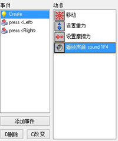
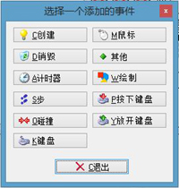
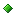

Game Maker 采用的是一种叫做事件驱动的编程方式，这种工作方式如下：每当游戏中发生了一些事情时，对象的实例会获取事件（一种告诉对象发生什么事的消息）， 实例会通过执行某些动作来对这些消息作出反应，每一个对象都可以设定事件，以及对应事件响应时执行的动作。这听起来很复杂，但其实很简单，一个对象基本上只会用到几个事件，并且你可以通过拖放按钮的方式来为事件添加动作。
在对象属性窗口的中央，有对象的事件列表，最初是空的，你可以通过添加事件按钮增添事件，弹出框会出现各种不同类型的事件， 你只要选择一个你想要的事件点击便可添加完成，不过有时会弹出一个额外的选项表，比如点击键盘事件时必须选择一个按键，下面会有对不同事件的说明， 我们可以对选中的事件进行更改。窗体右边列出了全部动作的小图标，他们被分在多个标签页中在下一个章节中你会认识所有的动作，以及它们的用处。事件列表和动作之间是动作列表，该列表包含当前事件要执行的动作，要给列表中添加动作，只需从右边将按钮拖动到列表中，它们将会按照拖拽顺序排列，并显示一些简短的描述，大多数动作都需要填入一些参数，这些将在下一章中详解。在添加了一些动作后，窗口看起来会是这样的：

现在你可以给其他的事件添加动作了，点击事件，并拖动按钮到事件中。
您可以使用拖放操作来更改列表中的动作的顺序，甚至可以将动作拖动到其他的对象中，如果你在拖动时按住了<Alt> 键，将会复制这个事件到对应位置。当你用鼠标右键点击一个事件时，会弹出复制，粘贴，删除操作（当然你也可以通过按下<Del>键来删除动作） 。（您可以通过按住<Shift>和<Ctrl>键多选，以及<Ctrl><A>键全选，剪切，复制或删除多个动作）当你将鼠标停留在动作上时，会显示一个长描述，更多关于动作的信息请见下一节。
要删除选中的事件及其包含的所有动作请按功能键 删除 。（当您关闭窗口时，没有任何动作的事件将会被删除，所以您不需要手动删除它们）如果你想将事件变更，但动作不变 （比如你想将一个按键事件里的动作分配给另一个按键）按下功能键 改变选择一个新事件即可（但这个新事件不能是已经添加在事件列表里的）。 使用在右键单击事件列表时弹出的菜单，也可以复制一个事件，也就是说，添加了一个具有相同动作的新事件。
如上所说，点击 添加事件，会弹出如下窗口：

选择你想要添加的事件，有时会弹出额外选项。 下面是关于各种事件的描述（再次记住，你通常只使用其中的几个）
创建事件
当实例被创建时执行此事件。通常用来设定实例的运动或声明变量
销毁事件
当实例被销毁时执行此事件。准确地说，是在它被摧毁之前，所以当事件被执行时，这个实例仍然存在！ 大多数情况下这个事件不会使用，但你可以用它来改变得分或创建一些其他的对象。
计时器事件
每一个实例都有12个计时器， 你可以使用特定的动作来设置这些计时器（见下一章）， 这些计时器会一直倒计时，当计时器为0时会触发计时器事件。想要定义一个计时器首先请在菜单中进行选择，计时器是非常有用的。你可以使用计时器事件让一些动作重复执行。例如让一个怪物每20步改变一次方向（不过这样需要在这个计时器事件中重新给这个计时器设定时间，这样就可以让这个事件反复被触发）
�i事件
�i事件在游戏中的每一步都会发生，你可以将一些需要不断执行的操作放在这里。例如一个对象想要跟随着另外一个，你可以在这里将这个对象的方向设定为到我们需要跟随的那个对象。但是也要小心使用这个事件，不要在有许多实例的对象中放置太多复杂的动作，这可能会导致游戏减速。更详细地来讲， 一共有三个不同的�i事件，通常你只会用到那个默认的�i事件，但在弹出菜单中，您还可以选择步开始事件和步结束事件，步开始事件在每一步开始时被执行，在任何其他事件之前发生；正常的�i事件在实例被放到新的位置之前执行；步结束事件在一步的最后，仅仅是绘制事件之前执行，常用于根据实例的当前方向改变精灵。
碰撞事件
当两个实例碰撞（即他们的精灵重叠）时，碰撞事件发生，不过，准确地来说有两个碰撞事件，因为碰撞双方都有碰撞事件。实例会对碰撞事件做出反应，要设置碰撞，先点碰撞事件菜单，再选择你想要定义碰撞事件的物体，接下来把动作放置在动作列表中。
当实例与固体物体或非固体物体发生碰撞时是有区别的。 首先，当在碰撞事件中没有任何动作时，什么也不会发生，即使发生碰撞的对象是固体，当前实例也会简单地保持移动。当碰撞事件包含动作时，会出现以下情况：
当另一对象是固体时，发生碰撞后实例会被放置回它以前的位置（即在碰撞发生之前的位置），接着事件执行，最后，实例被放到它的新位置。 因此可以在这个事件里反转运动的方向，例如让实例在墙上不停的反弹。 如果和固体一直发生碰撞，这个实例则会一直保持在之前的位置，对于阻止实例移动效果拔群。
当另一对象不是固体时，实例不会被放回，实例只会在当前位置上执行事件，并且碰撞不会检测两次。仔细想想就知道这是顺理成章的，由于实例并非固体，我们可以很轻易地穿过它 ，穿过时会持续触发事件
碰撞事件用途很多，例如你可以让实例在墙面反弹，或让子弹撞到墙面上后被销毁。
键盘事件
当玩家按下键盘上的按键时，所有对象所有实例的键盘事件都会发生，每个键都有一个不同的事件，你可以在按键事件的菜单中选择按键，然后将动作拖放进去。显然，这个事件只有在少数的对象中会被用到，只要玩家按住按键，事件就会持续触发。这里有两个特殊的按键事件，第一个叫做<没有按键>，当无键盘操作时，这个事件在每步都会触发；第二个叫做
<任何按键> ，它在有按键按下时会触发。当玩家按下数个按键时，所对应按键的事件都会发生。有一点需要注意的是，当小数字键盘上的按键按下时，只有键盘锁<NumLock>处于关闭状态时才会触发相应事件
鼠标事件
当鼠标指针在一个实例的精灵上时，鼠标事件发生，按照鼠标的按键情形而定，有<没有按键>，<左键>，<右键>，或<中键>事件等等，如果玩家一直按住鼠标按键，鼠标事件在每一步都会发生。鼠标按下事件只在鼠标按下时执行一次，鼠标松开事件只在鼠标松开时执行一次，注意这些事件只有鼠标在实例上方时才会发生。如果你想鼠标按下或松开事件在任何地方响应，请使用全局鼠标事件，可以在子菜单中找到。这里有两个特殊的鼠标事件， 鼠标指向实例时发生鼠标靠近事件，鼠标离开实例时发生鼠标离开事件，这两个事件通常用来改变图像或播放一些声音，当用户移动鼠标滚轮时会发生鼠标滚轮向上和向下事件。 最后有一些相关的手柄事件，
你可以为操纵杆的四个主要方向指定动作（如果按下方向为对角线，则会同时执行两个方向的事件），还可以定义多达8个手柄按键。以上功能可以用于主副两个手柄。

其他事件
绘制事件
当实例可见时，每一步都会在屏幕上绘制出他们的的精灵， 但当你在绘制事件设定动作时，实例将停止自绘，取而代之的是执行绘制事件中的动作。这里有一些主要用于绘制事件的绘制动作，可以用来绘制一些精灵之外的东西，或对精灵参数做出一些修改。请注意，绘制事件只在对象可见时执行， 还有，绘制出来的东西是独立的，不参与碰撞，碰撞事件只基于与实例自身相关联的原精灵。
按下键盘事件
此事件类似于键盘事件，但只在按键被按下的时候执行一次，而不是不断执行，如果你想要一些动作在键盘按下的时候只执行一次，这个对你非常有用。
松开键盘事件
此事件类似于键盘事件，但只在按键被释放的时候执行一次，而不是不断执行。
在特定情况下，弄清 Game Maker的事件顺序是非常重要的，特定事件的执行顺序如下：
创建，销毁，其他事件在相应的事情发生时执行